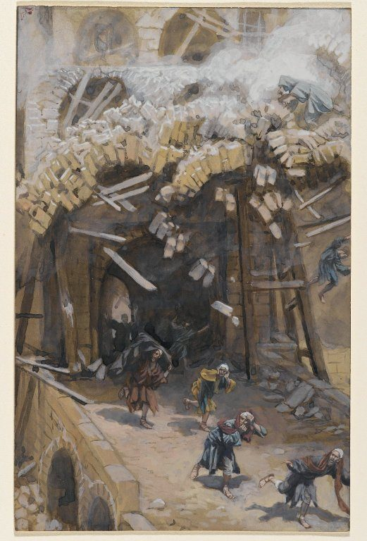

Luke 13 — The Mister Translation

⭐⭐⭐ Tissot paints the one thing the text never does: the moment of the fall itself. Luke's own sentence is retrospective — 'those eighteen on whom the tower fell' (v4) — a fact already finished by the time anyone reports it to Jesus. Tissot instead stages the collapse as it happens: the arch still shedding stone and timber in the same instant that the figures below are caught mid-stride, fleeing a disaster none of them saw coming. The painting supplies exactly the kind of causal, explicable disaster scene this chapter's own opening verses refuse to supply a moral for — Jesus's own point is that a falling tower proves nothing about who deserved it.
_-_James_Tissot.jpg){kind=link}
Translator’s Notes — verse by verse
⭐⭐ Two disasters, one man-made and one not — and Jesus refuses both as proof of extra guilt. A political killing (Pilate murdering worshippers in the act of sacrificing, mixing their own blood with the blood of their offerings) and a structural accident (a tower falling on passers-by) are about as different as two catastrophes can be, yet Jesus answers them with the identical two-part refrain: no, they were not worse sinners — and unless you repent, you will all likewise perish. The refrain is not quite verbatim: v3 closes with homoiōs, ‘likewise’; v5 closes with hōsautōs, a different Greek adverb for the same ‘in the same way’ — a small variation that keeps a twice-repeated line from reading as mechanically copied.
Jesus is not answering the question anyone would naturally ask about a tragedy — whose fault was it? — but the question underneath it, whether suffering measures sin. That refusal has company elsewhere in Scripture: it is the very point John’s Gospel will make explicit about a man born blind (John 9:2–3, not yet on these pages), and it is the argument Job’s whole book already makes at length against three friends convinced his suffering proved his guilt. The verb itself, repent, is Luke’s own recurring word for the change of direction John the Baptist first demanded (3:8, already on these pages) — not remorse over the dead Galileans, but a turn in the hearer’s own life, which is the one thing a headline about someone else’s death cannot supply on its own.
The shelf splits on how to say it. Douay, following the Vulgate’s poenitentiam agite, reads ‘unless you shall do penance’ at both verses; Geneva reads ‘except ye amend your lives’ — the same argument over this verb’s meaning already noted at its first occurrence (see the Dictionary), fought out again here in miniature. NIV, TLB and NWT all read the plainer ‘repent’, which this translation follows.
⭐⭐⭐ A barren fig tree that is spared, told right after a chapter that opens on repentance — and the Synoptic Gospels have exactly one OTHER fig tree, which is not spared at all. Mark’s fig tree (Mark 11:12–14, 20–21, already on these pages) is a real tree on the road to Jerusalem, found fruitless out of season, cursed on the spot, and found withered the very next morning — judgment with no reprieve. This parable’s fig tree, planted in a vineyard rather than growing wild, has already had three full years to produce and still gets one more, on the vinedresser’s own request, before the axe falls. Both trees stand in a long prophetic tradition of a fruitless fig tree as a figure for a fruitless Israel (Jeremiah 8:13, Hosea 9:10, Micah 7:1, none yet on these pages) — but where Mark’s enacts the sentence, Luke’s parable pauses it, arguing for patience one growing season longer.
The vinedresser never claims the tree deserves the extra year — only that he will work it personally (‘I will dig around it and put on manure’) and let one more harvest decide. The parable stops before saying which way the following year goes; it is a plea for a reprieve, not a promise that the reprieve will be enough.
⭐⭐⭐ “A daughter of Abraham” is said of exactly one person in the entire New Testament — this unnamed woman, here. The nearest parallel, ‘a son of Abraham’, is likewise said of exactly one person: Zacchaeus, six chapters ahead (19:9, not yet on these pages). Between them the two titles bracket two very different scenes — a crippled woman restored in a synagogue, a despised tax collector welcomed at a table — joined only by Luke’s own insistence that Abraham’s family includes people a synagogue ruler and a city’s respectable crowd would not expect to find in it.
⭐⭐ Eighteen recurs three times in this chapter, spelled two different ways. The tower’s dead (v4) and this woman’s years of bondage (v11) both use the ordinary compound numeral dekaoktō; at v16, naming the number again, the Greek instead spells it out in full, deka kai oktō, ‘ten and eight’ — a stylistic variation, not a different figure, but one that leaves the eighteen sounding almost deliberately underlined the second time it is said of her. A sudden death nobody chose and a lingering illness blamed on Satan have nothing else in common; the shared number is the only thread linking them, and it is Luke’s own doing, since nothing in either source obliges the coincidence.
“Ruler of the synagogue,” archisynagōgos in the Greek, is the identical title this Gospel gave Jairus (8:49, already on these pages), the only two times Luke uses the word. One ruler begs Jesus for his dying daughter; this one is indignant at a healing that has already happened, in his own synagogue, on his own Sabbath — the same office, the opposite reaction.
The ox-and-donkey argument here (v15) is not the last time this Gospel puts an animal’s Sabbath needs beside a human being’s: a son or an ox fallen into a well earns the identical logic once more at a Pharisee’s own table (14:5, not yet on these pages). And this is Luke’s second Sabbath-healing controversy in his own Gospel, after the man with the withered hand (6:6–11, already on these pages; Mark tells the same story at 3:1–6, already on these pages) — both scenes end the identical way, opponents humiliated and a crowd left rejoicing.
⭐⭐⭐ Yeast, used here as a picture of the kingdom — exactly the reversal the last chapter's own note promised. Luke 12:1’s note on ‘the yeast of the Pharisees, which is hypocrisy’ named this passage in advance as the place where Luke would turn the same image around, into something good — and here it is, two chapters later, exactly as promised: a woman’s yeast worked all through three measures of flour, standing for the kingdom of God itself. Luke has now used zymē for both the corruption and the kingdom within the space of two chapters, completing on his own pages the identical two-sided use of the image Matthew’s Gospel already carries between 13:33 (kingdom) and 16:6 (corruption) — the same word doing opposite work in both Gospels, just in reverse order between them.
The mustard seed and the yeast arrive as a matched pair here exactly as they do at Matthew 13:31–33 (already on these pages) — the same two images, in the same order, both making the identical point: something small and hidden that becomes, given time, impossible to miss. Mark’s own version of this teaching keeps the mustard seed (4:30–32, already on these pages) but has no yeast paired beside it — the doublet is a Matthew-and-Luke arrangement, not a feature of every Gospel that tells the parable.
Three measures of flour (v21) is a substantial batch — roughly enough to feed a hundred people — which is itself part of the point: a pinch of yeast worked into that much dough disappears from sight completely, exactly like the seed ‘the smallest of all the seeds’ in Matthew’s own telling (13:32, already on these pages), before either one does its work in full.
⭐⭐ Luke’s narrow opening is a DOOR; Matthew’s is a GATE. The Sermon on the Mount’s version of this same saying about the few who find life reads stenos twice over a pylē, a city or courtyard gate (Matthew 7:13–14, already on these pages); here the identical adjective describes a thyra, an ordinary house door — the same word Luke will use again for the door a friend must be roused to open at midnight (11:7, already on these pages). The image shifts from a city’s public gate to a private house shutting for the night, which fits this scene’s own household setting: a master who gets up, locks up, and does not recognize the voices still knocking outside.
⭐⭐ “Sir, open to us” — not, on this shelf, universally “Lord.” KJV, Geneva, Douay, ASV and TLB all print ‘Lord’ (or ‘Lord, Lord’) at v25's knock; NWT and NIV both read ‘Sir’ instead, which this translation follows — the anonymous crowd at the door is not yet claiming any relationship with the householder, only asking to be let in, and English ‘Lord’ capitalized would tell a reader more than the Greek vocative kyrie commits to at this point in the scene.
⭐⭐ “I do not know where you are from” is not Matthew’s “I never knew you.” Matthew’s parallel scene has the householder say oudepote egnōn hymas, ‘I never knew you’ — a denial of relationship (Matthew 7:23, already on these pages). Luke’s householder instead says twice, almost word for word, ouk oida pothen este, ‘I do not know where you are from’ — a denial of origin, not of acquaintance, which fits a door-scene better than a courtroom-style disowning does. The charge that follows also differs: Matthew’s ‘workers of LAWLESSNESS’ (anomia) becomes Luke’s ‘workers of UNRIGHTEOUSNESS’ (adikia, v27) — near-synonyms, not the same Greek noun either time.
⭐ Four compass points here, only two in Matthew’s version of the same image. Matthew’s guests come ‘from east and west’ to recline with Abraham, Isaac and Jacob (8:11–12, already on these pages); Luke adds a second pair, ‘from north and south’ (v29) — the whole compass rather than half of it, widening an already-startling image (Gentiles seated with the patriarchs) into an even larger crowd of outsiders let in.
⭐⭐ “Fox” names an animal exactly once elsewhere in this Gospel — and there it is not an insult at all. The word occurs in only two verses of the whole of Luke: here, and at 9:58 (already on these pages), where Jesus says of himself, ‘Foxes have dens, and the birds of heaven have nests, but the Son of Man has nowhere to lay his head.’ There the fox is simply an animal with a home he lacks; here the same word becomes a plain insult for Herod Antipas — sly, contemptible, no real threat — from a man Herod has just been reported wanting to kill. Jesus answers the threat by naming a fixed, self-set schedule (‘today and tomorrow’, twice over) that a ruler’s wish to kill him does not get to move.
“On the third day I reach my goal” (teleioumai, from the verb behind ‘perfect, complete, finish’) reads variously across the shelf: NWT ‘I shall be finished’; ASV ‘I am perfected’; KJV ‘I shall be perfected’; NIV ‘I will reach my goal’; TLB ‘I will reach my destination’. None of the shelf ties the phrase explicitly to the resurrection on the third day that will in fact end this journey; the verb names only completion, and this translation leaves the reader to notice the number rather than pressing the connection the text itself does not make outright.
“It is not possible for a prophet to perish outside Jerusalem” (v33) is bitterly ironic rather than strictly true — Zechariah son of Jehoiada was killed IN the temple precincts, not outside them (2 Chronicles 24:20–21, not yet on these pages) — and reads less like a claim about geography than a settled resolve: whatever Herod wants, it is Jerusalem, not Galilee, that will decide how this ends.
⭐⭐⭐ This exact lament recurs almost word for word at the very end of Matthew’s Gospel — in a completely different setting. Matthew places these same sentences at the close of the seven woes, inside Jerusalem itself, during the last week (Matthew 23:37–39, already on these pages, including the same ‘Jehovah’ at its closing quotation). Luke places them here, still on the road, spoken in direct response to a report that Herod wants him dead — a different moment in the story carrying almost the same words. The library reports rather than resolves the question this raises: whether Jesus said this once and each Gospel relocates it to serve its own structure, or said something so similar twice that the two accounts preserve two separate occasions. Both readings are argued; nothing in either text settles it.
One Greek noun does change between the two tellings. Matthew’s hen gathers ta nossia, ‘the chicks’ — the ordinary plural for individual young birds; Luke’s hen instead gathers tēn heautēs nossian, ‘her own brood’ — a collective singular, one nestful rather than several chicks counted one by one. The picture is the same either way; the grammar counts it differently.
“In the name of Jehovah” (v35) quotes Psalm 118:26 (not yet on these pages), whose Hebrew names God outright (YHVH) — this translation reads ‘Jehovah’ here, as at Matthew’s parallel, since the Greek kyrios stands in for the divine name of an Old Testament quotation rather than naming Jesus himself. Jerusalem will not see him again, on this saying's own terms, until its own crowd is ready to greet him in exactly the words the earlier Psalm already supplied — which is precisely what happens, briefly, at his entry into the city not many chapters ahead (19:38, not yet on these pages).
Patterns worth carrying forward
Where this translation keeps the words exact / distinct: Siloam’s tower (v4) left as the isolated, unexplained incident the text actually gives it, rather than filled in with a cause the Gospel never supplies; daughter of Abraham (v16) kept as the New Testament’s only such title, matched later by its one counterpart, ‘son of Abraham’; door (v24) kept distinct from Matthew’s gate for the same narrow-opening saying; and Sir (v25) kept lower-case against a shelf that mostly capitalizes ‘Lord’ at the same knock.
Echoes paid. Luke 12:1’s own note, which already promised that this Gospel’s negative ‘yeast of the Pharisees’ would be answered by its opposite two chapters ahead, is paid in full at vv18–21 — a mustard seed and a woman’s yeast, both pictures of the kingdom. Jairus’s title, archisynagōgos, planted at 8:49, recurs here for its only other use in this Gospel (v14). And the fox Jesus named of himself at 9:58 — an animal with a den he lacks — returns here as an insult for Herod (v32), the word’s only two occurrences in Luke.
Echoes planted. The ox-or-donkey Sabbath argument of v15 will be made once more, of a son or an ox in a well, at a Pharisee’s own table (14:5, not yet on these pages). ‘Son of Abraham’ (19:9, not yet on these pages) will answer this chapter’s own ‘daughter of Abraham’ (v16). And the crowd that cannot yet say ‘Blessed is he who comes in the name of Jehovah’ (v35) will say exactly that, briefly, at the entry into Jerusalem still several chapters off (19:38, not yet on these pages).
Next in sequence: Luke 14 — a man with dropsy healed on the Sabbath at a Pharisee’s own table, guests scrambling for the best couches, and a great banquet whose invited guests all beg off, so a master sends his slave out into the streets and lanes to fill the empty places instead.